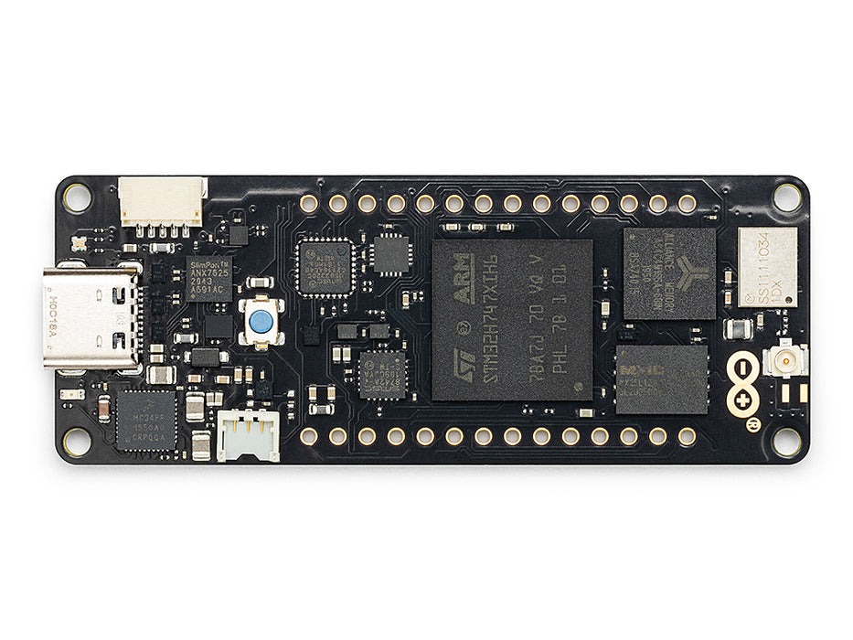
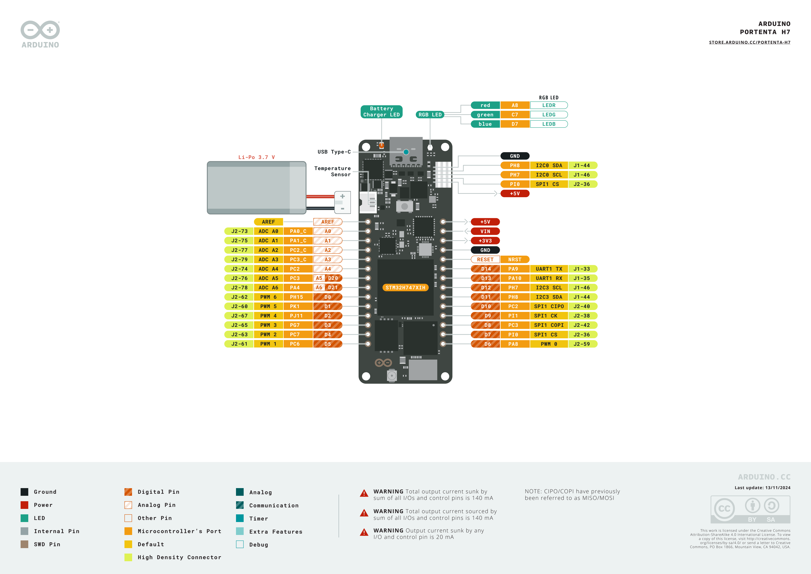

Arduino Portenta H7
The Arduino Portenta H7 is a 66 × 25 mm industrial dev board built around the STMicroelectronics STM32H747XI — a dual‑core SoC combining a Cortex‑M7 at 480 MHz with a Cortex‑M4 at 240 MHz. The OpenMV firmware runs entirely on the M7 core and is designed to be used with the Portenta Vision Shield (Ethernet or LoRa edition), which adds a Himax HM01B0 / HM0360 camera, a PDM microphone, and a microSD slot to the base Portenta H7.
{kind=link}

For full datasheet, photos, and dimensions see the Arduino Portenta H7 product page.
Highlights
STMicroelectronics STM32H747XI dual Cortex‑M7 (480 MHz) + Cortex‑M4 (240 MHz). OpenMV firmware runs on the M7 core only; the M4 core is exposed through openamp – provides standard Asymmetric Multiprocessing (AMP) support for Inter‑Processor Communication.
8 MB external SDRAM plus 2 MB internal flash and 16 MB external QSPI flash — enough headroom for full‑colour VGA framebuffers and large ROMFS assets.
Hardware JPEG encoder/decoder.
Wi‑Fi b/g/n (2.4 GHz) + Bluetooth LE 5.1 via the Murata 1DX (CYW4343W) module — chip antenna on the module, no external antenna required.
High‑speed USB‑C (480 Mb/s) through the on‑die USB HS PHY plus an external USB3320 ULPI PHY.
23 user I/O pins on the Arduino MKR‑style top headers — D0–D14 (digital) plus A0–A7 (analog).
Two 80‑pin high‑density connectors on the bottom expose the full STM32H747 fabric — DCMI, DSI, Ethernet RMII, FDCAN, SDIO, SAI/I²S, UARTs, additional SPI/I²C/timers, and so on. Shields like the Vision Shield mate to these connectors.
JTAG / SWD broken out on the bottom HD connector for advanced debug.
Battery support — 3.7 V Li‑Po JST connector plus on‑board charger and battery monitor.
Warning
The Portenta H7 by itself has no on‑board camera or microphone
— those live on the Vision Shield. Without a Vision Shield (or an
equivalent breakout that exposes the DCMI / DFSDM lines) the
csi and audio modules will fail to initialise. You can
still use the rest of the firmware (Wi‑Fi, BLE, ML on stored
images, the LCD, the I/O pins, etc.).
Pinout
{kind=link}

Pin reference
The Portenta H7 exposes 23 Arduino‑silkscreened pins on its top edge headers — 15 digital and 8 analog. Many more SoC pins are available through the bottom 80‑pin high‑density connectors for shield work; see Arduino’s full pinout PDF for that mapping.
Pin name |
Reference |
Function |
|---|---|---|
D0 |
3.3 V |
GPIO / PH15 |
D1 |
3.3 V |
TIM1 CH1 / PK1 |
D2 |
3.3 V |
GPIO / PJ11 |
D3 |
3.3 V |
GPIO / PG7 |
D4 |
3.3 V |
TIM3 CH2 / PC7 |
D5 |
3.3 V |
TIM3 CH1 / PC6 |
D6 |
3.3 V |
TIM1 CH1 / PA8 |
D7 |
3.3 V |
SPI2 NSS / TIM5 CH4 / PI0 |
D8 |
3.3 V |
SPI2 MOSI / PC3 (also A3 / D20) |
D9 |
3.3 V |
SPI2 SCK / PI1 |
D10 |
3.3 V |
SPI2 MISO / PC2 (also A2) |
D11 |
3.3 V |
I2C3 SDA / PH8 |
D12 |
3.3 V |
I2C3 SCL / PH7 |
D13 |
3.3 V |
UART1 RX / PA10 |
D14 |
3.3 V |
UART1 TX / PA9 |
A0 |
1.8 V |
ADC2 IN0 / PA0_C |
A1 |
1.8 V |
ADC2 IN1 / PA1_C |
A2 |
3.3 V |
ADC3 IN0 / PC2_C (shared with D10) |
A3 |
3.3 V |
ADC3 IN1 / PC3_C (shared with D8) |
A4 |
3.3 V |
ADC IN12 / PC2 (shared with D10) |
A5 |
3.3 V |
ADC IN13 / PC3 (shared with D8) |
A6 |
3.3 V |
ADC IN18 / DAC1 OUT / PA4 (also D21) |
A7 |
3.3 V |
ADC IN3 / PA6 |
RESET |
3.3 V |
press the on‑board switch or pull to GND to reset |
LED_RED |
3.3 V |
RGB LED red channel (active low) / PK5 |
LED_GREEN |
3.3 V |
RGB LED green channel (active low) / PK6 |
LED_BLUE |
3.3 V |
RGB LED blue channel (active low) / PK7 |
Note
A0 and A1 connect to the analog‑only _C pads on
the STM32H747; they are 1.8 V referenced and have no GPIO function
— treat them as ADC inputs only. A2/A4 and A3/A5
share their physical pins with D10 and D8 respectively, so
you cannot drive PWM or SPI on those at the same time as reading
them as analog.
Power pins
+5V — switched 5 V from USB / VIN, available to power external shields. Up to ~140 mA total across all I/Os.
VIN — 5 V input. Powers the board through the on‑board PMIC (the same rail as USB).
+3V3 — main 3.3 V rail (regulated by the PMIC’s SMPS and LDOs).
GND — common ground.
Battery and HD‑connector inputs:
Li‑Po JST on the back of the board accepts a 3.7 V Li‑Po cell. The PMIC charges it from USB / VIN.
VSYS / +5V / VIN are also routed to the bottom HD connectors so a Vision Shield or carrier can supply or sink power.
The Portenta H7 can be powered through any of three paths:
USB‑C — supplies 5 V to the on‑board PMIC.
VIN pin — drive a regulated 5 V supply.
Li‑Po battery — connect to the JST on the back.
Recovery and debug pins
RESET — both an exposed pin on the top header and a momentary switch on the side of the board, tied to the SoC’s NRST line. Pull to GND or press the button to reset.
The Portenta H7 uses Arduino’s standard double‑tap reset to enter the STM32H747 ROM bootloader. Quickly press the reset button twice — the board re‑enumerates over USB as a DFU device and OpenMV IDE can flash a new firmware image.
A running script can re‑enter the bootloader on demand by calling
machine.bootloader():
import machine
machine.bootloader()
The STM32 SWD signals are exposed on the bottom HD connector J1
(J1‑75 = SWDIO / PA13, J1‑77 = SWCLK / PA14, J1‑79 = SWO
/ PB3, J1‑73 = NRST). Wire them up via a Portenta Breakout, the
official Arduino debug adapter, or a custom carrier with a 1.27 mm
header.
All debug signals are 3.3 V referenced.
Onboard peripherals
LEDs
The Portenta H7 has a single user RGB LED, software‑controllable through machine.LED:
from machine import LED
LED("LED_RED").on()
LED("LED_GREEN").on()
LED("LED_BLUE").on()
A separate yellow charge LED next to the battery JST lights when the on‑board charger is sourcing current into a connected Li‑Po; it is not user‑controllable.
Camera sensor (Vision Shield)
With the Portenta Vision Shield (Ethernet or LoRa edition) attached, the Himax sensor is driven through the csi — camera sensors module:
import csi
cam = csi.CSI()
cam.reset()
cam.pixformat(csi.GRAYSCALE)
cam.framesize(csi.QVGA)
cam.snapshot(time=2000) # let auto‑exposure settle
while True:
img = cam.snapshot()
Two Vision Shield revisions are supported:
HM01B0 — 320 × 320 monochrome QQVGA / QVGA, low‑power.
HM0360 — 640 × 480 monochrome VGA, faster and higher resolution.
The firmware probes both at boot, so the same script runs on either shield as long as you stay within the lower resolution.
Machine learning
ml — Machine Learning runs quantised TFLite models on the Cortex‑M7
with CMSIS‑NN kernels — fast enough for compact detectors at a
few frames per second, and the 8 MB SDRAM gives plenty of room for
larger model weights. Models on the read‑only /rom filesystem
load directly from flash without copying to RAM. Here’s a 128×128
BlazeFace detector overlaying the detected face and its six landmarks
on every frame from the Vision Shield camera:
import csi
import time
import ml
from ml.postprocessing.mediapipe import BlazeFace
# Initialize the sensor.
csi0 = csi.CSI()
csi0.reset()
csi0.pixformat(csi.GRAYSCALE)
csi0.framesize(csi.QVGA)
# Load built-in face detection model
model = ml.Model("/rom/blazeface_front_128.tflite", postprocess=BlazeFace(threshold=0.4))
print(model)
clock = time.clock()
while True:
clock.tick()
img = csi0.snapshot()
# faces is a list of ((x, y, w, h), score, keypoints) tuples
for r, score, keypoints in model.predict([img]):
ml.utils.draw_predictions(img, [r], ("face",), ((0, 0, 255),), format=None)
# keypoints is a ndarray of shape (6, 2)
ml.utils.draw_keypoints(img, keypoints, color=(255, 0, 0))
print(clock.fps(), "fps")
Microphone (Vision Shield)
The Vision Shield’s PDM microphone is captured through audio — Audio Module over the STM32’s SAI4 peripheral:
import audio
from ulab import numpy as np
def loudness(pcmbuf):
samples = np.array(np.frombuffer(pcmbuf, dtype=np.int16), dtype=np.float)
rms = np.sqrt(np.mean(samples ** 2))
if rms > 10000:
print("Loud!", int(rms))
audio.init(channels=1, frequency=16000, gain_db=24)
audio.start_streaming(loudness)
microSD card (Vision Shield)
When the Vision Shield is attached and a card is inserted, the
firmware mounts it automatically at /sdcard:
import os
for entry in os.listdir("/sdcard"):
print(entry)
The boot directory is set to /sdcard if the card is present,
otherwise /flash — see Filesystem and boot order below.
Battery fuel gauge
The Portenta H7 carries the same Maxim MAX17262 ModelGauge m5
fuel gauge as the Nicla Vision. It tracks the Li‑Po battery’s
voltage, current, temperature, and state of charge over the on‑board
PMIC I²C bus. On the Portenta H7 that bus is I²C 1 (the SoC’s
internal PB6/PB7 pair, also routed to the bottom HD connectors), and
the fuel gauge sits at address 0x36.
The MAX17262 has internal current sensing, so the current register reads out directly in microamps with no external Rsense factor. Reading is harmless — there’s no driver shipped, but the registers documented in the MAX17262 datasheet can be read directly:
import time
import struct
from machine import I2C
FUEL_GAUGE = 0x36 # MAX17262
def read_reg(bus, addr, reg):
return struct.unpack("<H", bus.readfrom_mem(addr, reg, 2))[0]
def read_signed(bus, addr, reg):
v = read_reg(bus, addr, reg)
return v - 0x10000 if v & 0x8000 else v
bus = I2C(1)
while True:
# 0x05 RepCap — remaining capacity, raw × 0.5 mAh
rep_cap = read_reg(bus, FUEL_GAUGE, 0x05) * 0.5
# 0x06 RepSOC — state of charge, raw / 256 %
soc = read_reg(bus, FUEL_GAUGE, 0x06) / 256
# 0x08 Temp — die temperature, signed, raw / 256 °C
temp = read_signed(bus, FUEL_GAUGE, 0x08) / 256
# 0x09 VCell — battery voltage, raw × 78.125 µV
vcell = read_reg(bus, FUEL_GAUGE, 0x09) * 78.125 / 1_000_000
# 0x0A Current — signed, raw × 156.25 µA
current = read_signed(bus, FUEL_GAUGE, 0x0A) * 156.25 / 1000
# 0x0B AvgCurrent — averaged current
avg_curr = read_signed(bus, FUEL_GAUGE, 0x0B) * 156.25 / 1000
# 0x10 FullCapRep — learned full capacity, raw × 0.5 mAh
full_cap = read_reg(bus, FUEL_GAUGE, 0x10) * 0.5
# 0x11 TTE — time-to-empty (valid while discharging), raw × 5.625 s
tte_s = read_reg(bus, FUEL_GAUGE, 0x11) * 5.625
# 0x20 TTF — time-to-full (valid while charging), raw × 5.625 s
ttf_s = read_reg(bus, FUEL_GAUGE, 0x20) * 5.625
# 0x17 Cycles — charge-cycle counter, 1% per LSB
cycles = read_reg(bus, FUEL_GAUGE, 0x17) / 100
print("V: %.3f V" % vcell)
print("Capacity: %.1f / %.1f mAh (%.1f %%)" % (rep_cap, full_cap, soc))
print("Temp: %.1f C" % temp)
print("Current: %.1f mA (avg %.1f mA)" % (current, avg_curr))
print("TTE: %.0f s TTF: %.0f s" % (tte_s, ttf_s))
print("Cycles: %.2f" % cycles)
print()
time.sleep_ms(1000)
Current is signed two’s-complement: positive while charging,
negative while discharging. TTE is only meaningful when current
is negative; TTF only when current is positive.
Power management IC
The NXP PF1550 PMIC handles every regulator on the Portenta H7
— the +3V3 main rail, the +1V8 SoC core / I/O rail, and the Li‑Po
charger. It sits on I²C 1 at address 0x08.
Warning
Reading PMIC registers is fine; writing to them is dangerous. Misconfiguring a buck regulator or charger setting can permanently damage the board, the battery, or both. Treat the PMIC as read‑only unless you know exactly what you’re doing.
The most useful thing the PMIC tells you that the fuel gauge can’t
is the charger state machine — whether the board is currently
running on USB / VIN, what stage of the charge cycle the Li‑Po is
in, and whether the charger is in a thermal or watchdog fault. The
charger registers live at an offset of 0x80 in the PF1550’s
main I²C address space (see §22.2 of the
PF1550 datasheet),
so for example CHG_INT_OK at charger address 0x04 is read
from PMIC register 0x84:
import time
from machine import I2C
PMIC = 0x08
# Charger state machine (low nibble of CHG_SNS, register 0x87)
CHG_STATES = {
0x0: "precharge",
0x1: "fast charge (constant current)",
0x2: "fast charge (constant voltage)",
0x3: "end of charge",
0x4: "done",
0x6: "timer fault",
0x7: "thermistor suspend",
0x8: "off — input invalid or charger disabled",
0x9: "battery overvoltage",
0xA: "thermal shutdown",
0xC: "linear mode (not charging)",
}
bus = I2C(1)
while True:
# 0x84 CHG_INT_OK — single-bit indicators
ok = bus.readfrom_mem(PMIC, 0x84, 1)[0]
vbus_ok = bool(ok & (1 << 5)) # bit 5 — VBUS valid (USB/VIN)
bat_ok = bool(ok & (1 << 2)) # bit 2 — battery OK
chg_ok = bool(ok & (1 << 3)) # bit 3 — charger actively charging
thm_ok = bool(ok & (1 << 7)) # bit 7 — thermistor in normal range
# 0x87 CHG_SNS — charger state + thermal regulation flag
chg_sns = bus.readfrom_mem(PMIC, 0x87, 1)[0]
state = CHG_STATES.get(chg_sns & 0x0F, "reserved")
treg = bool(chg_sns & (1 << 7)) # thermal regulation active
print("VBUS valid: ", vbus_ok)
print("battery OK: ", bat_ok)
print("charger active: ", chg_ok)
print("thermistor normal: ", thm_ok)
print("thermal reg active: ", treg)
print("state: ", state)
print()
time.sleep_ms(1000)
Other read‑only registers worth a look in the datasheet (all at
charger‑offset 0x80): 0x80 CHG_INT (latched charger
interrupts — fault flags), 0x86 VBUS_SNS (the multi‑bit
VBUS state including OVLO / UVLO / DPM), and 0x88 BATT_SNS
(battery presence and overcurrent state).
Wi‑Fi
The on‑board Murata 1DX (CYW4343W) is exposed via network — network configuration as a station interface. The Portenta H7 has a chip antenna on top of the module — no external antenna needed:
import network, time
wlan = network.WLAN(network.STA_IF)
wlan.active(True)
wlan.connect("ssid", "password")
while not wlan.isconnected():
time.sleep(1)
print("Wi‑Fi IP:", wlan.ipconfig("addr4")[0])
Bluetooth
The same Murata 1DX also exposes Bluetooth LE 5.1. Use aioble — Async BLE for asyncio‑friendly BLE — for example, advertise as a peripheral and wait for a central to connect:
import asyncio
import aioble
async def run():
while True:
conn = await aioble.advertise(250_000, name="Portenta-H7")
print("Connected:", conn.device)
await conn.disconnected()
asyncio.run(run())
Bus reference
GPIO
Use machine.Pin to read or drive any of the silkscreened pins. Outputs are 3.3 V CMOS and can sink/source up to 20 mA per pin (140 mA total across the whole header).
from machine import Pin
out = Pin("D0", Pin.OUT)
out.on()
out.off()
out.value(1)
inp = Pin("D1", Pin.IN, Pin.PULL_UP)
print(inp.value())
Any input pin can also fire an interrupt on edge transitions:
def handler(pin):
print("triggered:", pin)
Pin("D1", Pin.IN, Pin.PULL_UP).irq(
handler, Pin.IRQ_FALLING | Pin.IRQ_RISING,
)
UART
Bus |
TX |
RX |
|---|---|---|
UART1 |
D14 |
D13 |
from machine import UART
uart = UART(1, baudrate=115200)
uart.write("hello")
uart.read(5)
Additional UARTs (UART4 / UART6 / UART8) are routed to the bottom HD connectors — useful if you build a custom carrier board.
I²C
Bus |
SCL |
SDA |
|---|---|---|
I2C3 |
D12 |
D11 |
from machine import I2C
i2c = I2C(3, freq=400_000)
i2c.scan()
i2c.writeto(0x76, b"hi")
Bus 3 is also used internally for camera control; user devices on
the same bus must avoid the camera’s I²C address (0x24). The
firmware also configures an alternate camera I²C bus (I²C 4, on
PH11/PH12) used by the Portenta breakout, but machine.I2C
is only wired to bus 1 (HD‑connector pins) and bus 3 (the user
D11/D12) — bus 4 is not exposed through machine.I2C.
The same hardware can also be used in target (slave) mode through machine.I2CTarget:
from machine import I2CTarget
buf = bytearray(32)
target = I2CTarget(3, addr=0x42, mem=buf)
SPI
Bus |
MOSI |
MISO |
SCK |
CS |
|---|---|---|---|---|
SPI2 |
D8 |
D10 |
D9 |
D7 |
from machine import SPI
from machine import Pin
spi = SPI(2, baudrate=10_000_000)
cs = Pin("D7", Pin.OUT, value=1) # CS is not driven by the SPI peripheral
cs.value(0)
spi.write(b"hello")
cs.value(1)
ADC
The Portenta H7 exposes eight 12‑bit ADC channels on A0–A7.
A0 and A1 are 1.8 V referenced (analog‑only _C pins);
A2–A7 are 3.3 V referenced (and share their physical pins
with D8–D10 / D21):
from machine import ADC
import time
adc = ADC("A2")
bat = ADC("A0") # 1.8 V referenced
while True:
print("A2:", adc.read_u16() * 3.3 / 65535, "V")
print("A0:", bat.read_u16() * 1.8 / 65535, "V")
time.sleep_ms(100)
Warning
A0 and A1 are 1.8 V referenced — driving a 3.3 V
signal in will saturate the converter and may damage the pin.
Divide higher voltages down externally.
DAC
A single 12‑bit DAC channel is exposed on A6 (= D21, MCU pin
PA4) through pyb.DAC:
from pyb import DAC
dac = DAC(1)
dac.write(int(0.5 * 255)) # 8‑bit output, ~1.65 V
PWM
Pin |
Timer / channel |
|---|---|
D1 |
TIM1 CH1 |
D4 |
TIM3 CH2 |
D5 |
TIM3 CH1 |
D6 |
TIM1 CH1 |
D7 |
TIM5 CH4 |
Drive any of them via machine.PWM:
from machine import Pin, PWM
pwm = PWM(Pin("D4"), freq=1_000, duty_u16=32768)
Note
D1 and D6 share TIM1 CH1, and TIM1 is taken over for the
camera master clock when the Vision Shield is initialised
through csi — camera sensors — so D1/D6 can only be
used for PWM with the camera off. Use D4, D5, or D7
for camera‑coexisting PWM.
D0, D2, D3, D8, D9, D10, D11, and
D12 are silkscreened with PWM markings on Arduino’s pinout
but the underlying STM32H747 alt functions for those pins are not
wired up by this firmware build’s AF table — use one of the pins
above if you need machine.PWM.
Software bit‑banged buses
machine.SoftI2C and machine.SoftSPI work on any GPIO if you need an extra bus.
Timing
time
The time module covers blocking delays, monotonic ticks, and
elapsed‑time measurement:
import time
time.sleep(1) # seconds
time.sleep_ms(500)
time.sleep_us(10)
start = time.ticks_ms()
# ...do work...
elapsed = time.ticks_diff(time.ticks_ms(), start)
Virtual timers
machine.Timer schedules periodic or one‑shot
callbacks without consuming a hardware timer slot. Pass -1 as
the id to use a virtual (software) timer:
from machine import Timer
one_shot = Timer(-1)
one_shot.init(period=5_000, mode=Timer.ONE_SHOT,
callback=lambda t: print("once"))
periodic = Timer(-1)
periodic.init(period=2_000, mode=Timer.PERIODIC,
callback=lambda t: print("tick"))
Period values are in milliseconds. Call deinit()
to stop and release the slot.
Real‑time clock
machine.RTC keeps wall‑clock time across
resets. The HD connector also exposes a COINCELL pad that can
back the RTC from a CR2032 across power loss:
from machine import RTC
rtc = RTC()
rtc.datetime((2026, 4, 30, 4, 12, 0, 0, 0)) # Y, M, D, weekday, h, m, s, subsec
print(rtc.datetime())
Watchdog
machine.WDT resets the board if the application hangs. Once started it can’t be stopped or reconfigured — feed it periodically inside your main loop:
from machine import WDT
wdt = WDT(timeout=5_000) # 5 second window
while True:
# ...do work...
wdt.feed()
Boot and runtime info
Firmware update (DFU)
The Portenta H7 uses Arduino’s standard double‑tap reset to enter the STM32H747 ROM bootloader. Quickly press the reset button twice — the board re‑enumerates over USB as a DFU device and OpenMV IDE can flash a new firmware image.
Filesystem and boot order
The Portenta H7 firmware mounts up to three filesystems on boot:
Internal flash — always mounted at
/flash. Holdsmain.pyandREADME.txtby default; created on the very first boot.microSD card — if a Vision Shield is attached and a card is inserted, it is mounted at
/sdcard.ROMFS — read‑only, memory‑mapped filesystem at
/romused to ship large data assets (e.g. AI models) that benefit from zero‑copy access. Mounted automatically by MicroPython at startup, before any user Python runs. The Portenta H7 build ships with micro_speech, person_detect, FOMO face detection, YOLO‑LC, BlazeFace, and the standard OpenCV Haar cascades preloaded.
After mounting, the working directory is set to /sdcard when the
card is present, otherwise /flash. The interpreter then runs
scripts from that directory:
boot.pyis executed on every soft reset (cold boot,Ctrl‑Dfrom the REPL, or whenever the running script returns).main.pyis executed only on cold boot, immediately afterboot.py. Subsequent soft resets re‑runboot.pybut drop straight to the REPL — to re‑runmain.pyyou have to fully reset the board.
Dropping a boot.py or main.py onto the SD card overrides the
copy in flash without touching it. To force the system to ignore an
inserted SD card (for example to run the flash main.py even with
a card present), create an empty file named SKIPSD at the root of
/flash.
The default main.py shipped on a freshly flashed board just
blinks the user RGB LED’s blue channel as a heartbeat (two short
pulses, short gap), so you can tell the firmware booted cleanly
without any host attached.
sys.path is extended to include all three filesystems and their
lib/ subdirectories, so importable modules can live in
/flash/lib, /sdcard/lib, or /rom/lib.
When connected over USB, the boot filesystem (/sdcard if a card
is present, otherwise /flash) also enumerates as a USB
mass‑storage drive on the host, letting you edit boot.py,
main.py, and any other files directly. Eject the drive before
resetting the board so the host flushes its cached writes.
Hard‑fault indicator
If the user RGB LED is rapidly cycling through all colours — fast enough that it tends to look like a twinkling white LED rather than distinct hues — the firmware has hit an unrecoverable hard fault. Reflash the firmware to recover; if reflashing doesn’t help, the board may be physically damaged.
Software libraries
See the library index for the full list of modules — including which ones are unique to the Portenta H7 build.